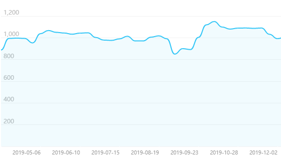
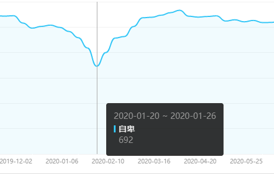
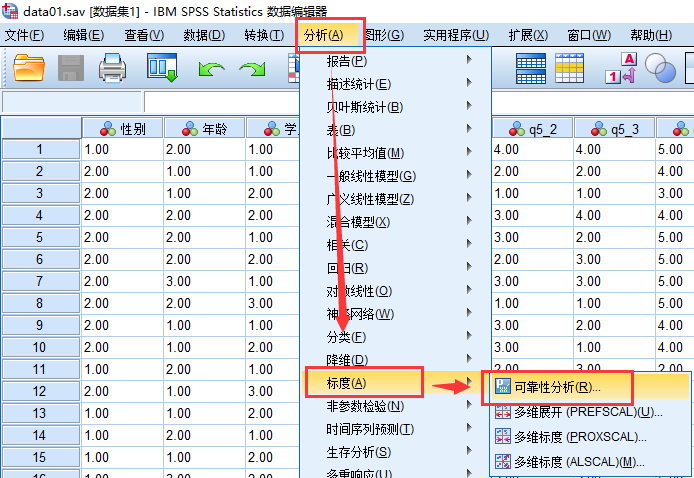
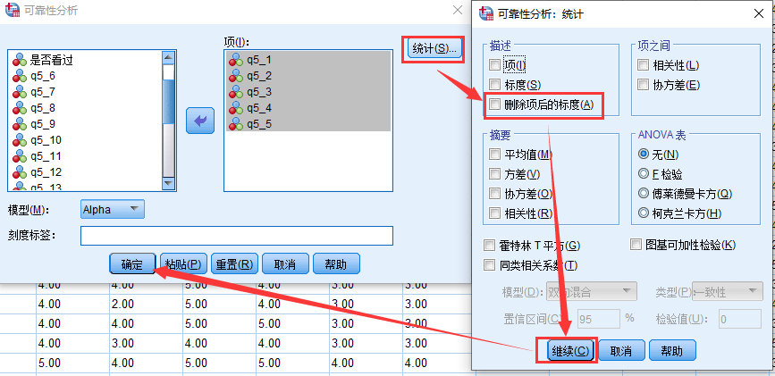
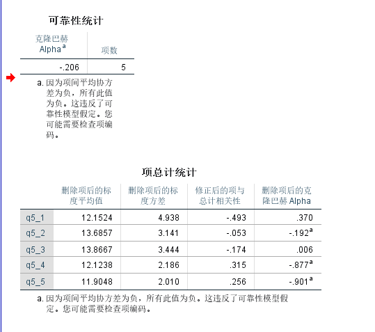
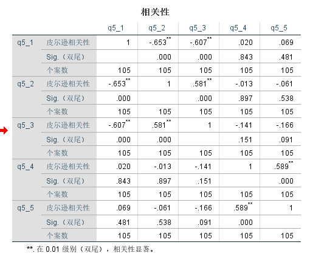
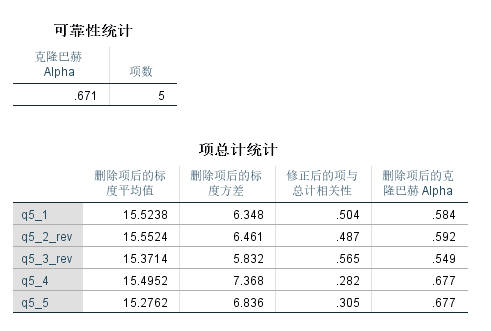

为什么要做信度
高信度的因子有以下优点:
- 测量的一致性: 当多个题目测量一个因子的时候, 我们期望这些题目之间相关较高(也就是一致性)
- 测量的稳定性: 当我们只对人测量一次的时候, 我们期望着一次结果有代表性, 可以代表他一个月/一年/或者一辈子的特质


信度种类
- 内部一致性信度: 一个因子内题目的相关性(常用)
- 重测信度: 同一个测验测量两次或者多次, 不同测量之间的相关性(不常用)
- 分半信度: 将一个因子内的题目随机分成两组, 两组题目之间的相关性(不常用)
信度分析流程
SPSS操作

“删除项后的标度”为了检验哪个题目导致信度高或者低。

结果解读

通过相关分析诊断问题在哪:


判断标准
通常认为0.7是信度合格的最低标准[1], 但是有时候也用0.6[2], 更多的的一个判断标准是:
0.7到0.8可以接受, 0.8-0.9不错, 0.9以上非常好。[3]
参考文献
- [1]Griethuijsen, R.A.L.F., van Eijck, M.W., Haste, H. et al. Global Patterns in Students’ Views of Science and Interest in Science. Res Sci Educ 45, 581–603 (2015). https://doi.org/10.1007/s11165-014-9438-6
- [2]Taber, K. S. (2018). The use of Cronbach’s alpha when developing and reporting
research instruments in science education. Research in Science Education, 48(6),
1273-1296. - [3]Cortina, J. M. (1993). What is coefficient alpha? An examination of theory and applications. Journal of applied psychology, 78(1), 98.
注意
本文由jupyter notebook转换而来, 您可以在这里下载notebook
统计咨询请加QQ 2726725926, 微信 shujufenxidaizuo, SPSS统计咨询是收费的
微博上@mlln-cn可以向我免费题问
请记住我的网址: mlln.cn 或者 jupyter.cn